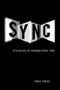

|
Inventing
Vietnam
The War in Film and Television
edited by Anderegg, Michael
295 pp • 5.5x8.25 • Fall 1991
paper 978-0-87722-862-2
cloth 978-0-87722-861-5
Excerpt available |
|
Hitler's
Heroines
Stardom and Womanhood in Nazi Cinema
Ascheid, Antje
288 pp • 6x9 • Fall 2002
paper 978-1-56639-984-5
cloth 978-1-56639-983-8
Excerpt available |
|
Hollywood
Asian
Philip Ahn and the Politics of Cross-Ethnic Performance
Chung, Hye Seung
256 pp • 6x9 • Fall 2006
paper 978-1-59213-516-5
cloth 978-1-59213-515-8
|

|
Women
and Film
A Sight and Sound Reader
edited by Cook, Pam and Philip Dodd
287 pp • 5.5x8.25 • Fall 1993
paper 978-1-56639-143-6
cloth 978-1-56639-142-9
Excerpt available |

|
Cowboys
as Cold Warriors
The Western and U.S. History
Corkin, Stanley
288 pp • 6x9 • Spring 2004
paper 978-1-59213-254-6
cloth 978-1-59213-253-9
Excerpt available |
|
Dream Machine
Realism and Fantasy in Hindi Cinema
Dayal, Samir 320 pp • 6x9 •
Fall 2015
paper 978-1-4399-1064-1
cloth 978-1-4399-1063-4 |

|
Teenagers
and Teenpics
The Juvenilization of American Movies in the 1950s
Doherty, Thomas
Revised and Expanded Edition
288 pp • 6x9 • Spring 2002
paper 978-1-56639-946-3
cloth 978-1-56639-945-6
Excerpt available |

|
Hollywood
Modernism
Film and Politics in the Age of the New Deal
Giovacchini, Saverio
304 pp • 6x9 • Spring 2001
paper 978-1-56639-863-3
cloth 978-1-56639-862-6
Excerpt available |

|
Shadows
on the Past
Studies in the Historical Fiction Film
Grindon, Leger
264 pp • 6x9 • Spring 1994
paper 978-1-56639-182-5
cloth 978-1-56639-181-8
Excerpt available |

|
Andy
Warhol's Blow Job
Grundmann, Roy
240 pp • 7x10 • Fall 2002
paper 978-1-56639-972-2
cloth 978-1-56639-971-5
Excerpt available |

|
Framing
Blackness
The African American Image in Film
Guerrero, Ed
272 pp • 6x9 • Fall 1993
paper 978-1-56639-126-9
cloth 978-1-56639-125-2 |

|
Countervisions
Asian American Film Criticism
edited by Hamamoto, Darrell Y. and Sandra Liu
317 pp • 7x10 • Spring 2000
paper 978-1-56639-776-6
cloth 978-1-56639-775-9 |

|
Bridge
of Light
Yiddish Film between Two Worlds
Hoberman, J.
416 pp • 8x9.25 • Fall 1995
paper 978-1-56639-404-8
Excerpt available |

|
The
Magic Hour
Film at Fin de Siècle
Hoberman, J.
280 pp • 7x10 • Fall 2002
paper 978-1-56639-996-8
cloth 978-1-56639-995-1
Excerpt available |

|
The
Red Atlantis
Communist Culture in the Absence of Communism
Hoberman, J.
326 pp • 5x9 • Fall 1998
paper 978-1-56639-767-4
cloth 978-1-56639-643-1
Excerpt available |

|
Vulgar
Modernism
Writing on Movies and Other Media
Hoberman, J.
300 pp • Fall 1991
paper 978-0-87722-866-0
cloth 978-0-87722-864-6 |

|
Feedback
The Video Data Bank Catalog of Video Art and Artist Interviews
edited by Horsfield, Kate and Lucas Hilderbrand
360 pp • 8.5x11 • Fall 2005
cloth 978-1-59213-182-2
Excerpt available |

|
Stan
Brakhage
Filmmaker
edited by James, David E.
248 pp • 6x9 • Spring 2005
paper 978-1-59213-272-0
cloth 978-1-59213-271-3
Excerpt available |

|
Heroes
in Hard Times
Cop Action Movies in the U.S.
King, Neal
282 pp • 5.5x8.25 • Spring 1999
paper 978-1-56639-702-5
cloth 978-1-56639-701-8
Excerpt available |

|
Multiple
Modernities
Cinemas and Popular Media in Transcultural East Asia
edited by Lau, Jenny Kwok Wah
264 pp • 7x10 • Fall 2002
paper 978-1-56639-986-9
cloth 978-1-56639-985-2
Excerpt available |

|
Roy
Orbison
The Invention of an Alternative Rock Masculinity
Lehman, Peter
224 pp • 6x9 • Spring 2003
paper 978-1-59213-037-5
cloth 978-1-59213-036-8
Excerpt available |

|
Running
Scared
Masculinity and the Representation of the Male Body
Lehman, Peter
256 pp • 6.5x9.25 • Fall 1993
paper 978-1-56639-222-8
cloth 978-1-56639-099-6
Excerpt available |

|
Italian
and Irish Filmmakers in America
Ford, Capra, Coppola, and Scorsese
Lourdeaux, Lee
288 pp • Spring 1990
paper 978-1-56639-087-3
cloth 978-0-87722-697-0 |

|
The
New Censors
Movies and the Culture Wars
Lyons, Charles
248 pp • 5.5x8.25 • Spring 1997
paper 978-1-56639-512-0
cloth 978-1-56639-511-3
Excerpt available |

|
Art
in Cinema
Documents Toward a History of the Film Society
MacDonald, Scott
320 pp • 7x10 • Fall 2005
cloth 978-1-59213-425-0
Excerpt available |

|
Cinema
16
Documents Toward a History of the Film Society
MacDonald, Scott
488 pp • 7x10 • Fall 2001
paper 978-1-56639-924-1
cloth 978-1-56639-923-4
Excerpt available |

|
The Chinese Diaspora on American Screens
Race, Sex, and Cinema
Marchetti, Gina
258 pp • 6x9 • Spring 2012
cloth 978-1-59213-518-9
Excerpt available |

|
From
Tian'anmen to Times Square
Transnational China and the Chinese Diaspora on Global Screens,
1989-1997
Marchetti, Gina
320 pp • 6x9 • Fall 2005
paper 978-1-59213-278-2
cloth 978-1-59213-277-5 |

|
Black
City Cinema
African American Urban Experiences in Film
Massood, Paula J.
280 pp • 6x9 • Fall 2002
paper 978-1-59213-003-0
cloth 978-1-59213-002-3
Excerpt available |

|
The Spike Lee Reader
edited by Massood, Paula J.
304 pp • 6x9 • Fall 2007
paper 978-1-59213-485-4
cloth 978-1-59213-484-7
Excerpt available |

|
A
Fine Romance
Five Ages of Film Feminism
Mellencamp, Patricia
344 pp • 6x9 • Fall 1995
paper 978-1-56639-401-7
cloth 978-1-56639-400-0
Excerpt available |

|
Hollywood's
New Deal
Muscio, Giuliana
320 pp • 6x9 • Fall 1996
paper 978-1-56639-496-3
cloth 978-1-56639-495-6 |
|
Cinemas in Transition in Central and Eastern Europe after 1989
edited by Portuges, Catherine, and Peter Hames
288 pp • 6x9 • Fall 2012
cloth 978-1-59213-265-2 |

|
Sisters
on Screen
Siblings in Contemporary Cinema
Rueschmann, Eva
304 pp • 6x9 • Fall 1999
paper 978-1-56639-747-6
cloth 978-1-56639-746-9
Excerpt available |

|
Rubble
Films
German Cinema in the Shadow of the Third Reich
Shandley, Robert R.
240 pp • 6x9 • Spring 2001
paper 978-1-56639-878-7
cloth 978-1-56639-877-0
Excerpt available |

|
Runaway Romances
Hollywood's Poswar Tour of Europe
Shandley, Robert R.
234 pp • 6x9 • Spring 2009
cloth 978-1-59213-945-3
Excerpt available |
|
Dangerous
Knowledge
The JFK Assassination in Art and Film
With a New Preface by the Author
Simon,
Art
298 pp • 5.25x9 • Spring 2013
paper 978-1-4399-1044-3
Excerpt available |
|
Frank
Capra
Authorship and the Studio System
edited by Sklar, Robert and Vito Zagarrio
304 pp • 5.5x8.25 • Spring 1998
paper 978-1-56639-608-0
cloth 978-1-56639-607-3
Excerpt available |

|
Resisting
Images
Essays on Cinema and History
edited by Sklar, Robert and Charles Musser
320 pp • Fall 1990
paper 978-0-87722-738-0
cloth 978-0-87722-731-1 |

|
Chinese Connections
Critical Perspectives on Film, Identity, and Diaspora
edited by Tan, See-Kam, Peter X. Feng and Gina Marchetti 320 pp • 6x9 • Fall 2008
paper 978-1-59213-268-3
cloth 978-1-59213-267-6
Excerpt available |
 |
Sync
Stylistics of Hieroglyphic Time
Tobias, James
304 pp • 6x9 • Spring 2010
cloth 978-1-4399-0201-1
Excerpt available |